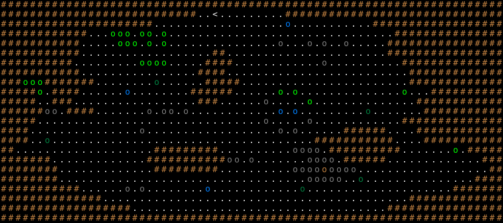

オークのキャンプ / Orc Camp
固定クエスト「オークのキャンプ」の達成条件・報酬・地形・出現モンスター・クエストメッセージ。
Fixed quest "Orc Camp": objective, reward, terrain, monsters and messages.
← クエスト一覧 / All quests · 🏠 ホーム / Home
概要 / Overview
| 項目 | 内容 |
|---|---|
| 受注箇所 | アングウィル（BUILDING_1） |
| 種別 | 全滅 |
| 対象Lv（危険度） | 15 |
| 目標 | エリア内の全モンスターを撃破 |
| 前提クエスト | — |
| 報酬 | エルフのクローク |
| フラグ | PRESET / ONCE |
達成条件 / Objective
クエストフロアに出現する 全モンスターを撃破 すると達成。
報酬 / Reward
達成後、依頼建物の前に出現する。
- エルフのクローク
クエストメッセージ / Messages
依頼時
この厄介なご時勢、ご多分にもれずこの静かな街にもオークの侵略隊が
これまでになく接近しています。この街の南にある谷で、我々の斥候が
オークの侵略軍を発見しました。彼らはアングウィルに全勢力で最終的
な侵攻をするための準備をしています。我々の軍勢は他の場所へ派遣し
てしまっています。どうかオークどもが街に達する前に追い払って下さい。
達成（報酬）時
協力して下さり有難うございます。この感謝の印をお受けとり下さい。
また近い将来助けていただくことになるかもしれません。
よろしくお願いします。
失敗時
既に他の者に仕事を任せてあります。しばらく私を一人にさせてください！
出現モンスター / Monsters
| 記号 | 表示 | モンスター | 体数 |
|---|---|---|---|
b |
o（Gray） | 丘オーク / Hill orc | 32 |
a |
o（Light Green） | スナガ / Snaga | 18 |
e |
o（Dark Gray） | ブラック・オーク / Black orc | 11 |
g |
o（Light Green） | 爆裂スナガ / Snaga sapper | 6 |
c |
o（Blue） | オーク・シャーマン / Orc shaman | 5 |
f |
o（Green） | オーク・キャプテン / Orc captain | 5 |
d |
o（Brown） | 丘オークの隊長『ゴルフィンブール』 / Golfimbul, the Hill Orc Chief | 1 |
地形・マップ / Map
初期位置と固定配置。記号の意味は下の凡例を参照。

ASCIIマップ
XXXXXXXXXXXXXXXXXXXXXXXXXXXXXXXXXXXXXXXXXXXXXXXXXXXXXXXXXXXXXXXXXXXXX
XXXXXXXXXXXXXXXXXXXXXXXXXXX..<.........XXXXXXXXXXXXXXXXXXXXXXXXXXXXXX
XXXXXXXXXXXXXXXXXXXXX..................c...........XXXXXXXXXXXXXXXXXX
XXXXXXXXXXXX...aaa.aa.a...............................XXXXXXXXXXXXXXX
XXXXXXXXXXX.....aaa.a.a...............b...b.b..b.....XXXXXXXXXXXXXXXX
XXXXXXXXXXX..................XX......................XXXXXXXXXXXXXXXX
XXXXXXXXXX.........aaaa.....XXXX............e..........XXXXXXXXXXXXXX
XXXXXXXXXXX................XXXX.........................XXXXXXXXXXXXX
XXXgggXXXXXXX........f......XXXXX.......................XXXXXXXXXXXXX
XXXXXg.XXXX......c........XXXXXX......a.a..............g...XXXXXXXXXX
XXXXX..XXX.................XXX......b.....a..............XXXXXXXXXXXX
XXXXXXee.XXXX.......b.bb.b............c.c.........f.......XXXXXXXXXXX
XXXXX...............................b.....b............XXXXXXXXXXXXXX
XXXX...............e..................e.b......XXXXXX....XXXXXXXXXXXX
XXXX..f....................................XXXXXXXXXXX....XXXXXXXXXXX
XX...................XXXXXXXXX..........bbbb.XXXXXXXXXX.......g.XXXXX
XXXXXXX.............XXXXXXXXXXXbb.b.......eeee.XXXXXX.............XXX
XXXXXXXX.............XXXXXXXXX..........bbbbdbbbb..................XX
XXXXXXXX..................................bbbbb..f...............XXXX
XXXXXXXXXXX......e.e........c............f....................XXXXXXX
XXXXXXXXXXXXXX..........................................XXXXXXXXXXXXX
XXXXXXXXXXXXXXXXXX...................................XXXXXXXXXXXXXXXX
XXXXXXXXXXXXXXXXXXXXXXXXXXXXXXXXXXXXXXXXXXXXXXXXXXXXXXXXXXXXXXXXXXXXX
地形の凡例
| 記号 | 表示 | 地形 / 内容 |
|---|---|---|
X |
#（Light Brown） | 永久岩の壁 |
. |
.（White） | 床 |
< |
<（White） | 上り階段 |
🤖 この解説ページは
tools/generate-wiki.mjsにより生成されています（出典:lib/edit/quests/*.txt,lib/edit/QuestPreferences.txt）。手動で編集しないでください — 変更は次回の再生成で上書きされます。内容の修正は生成スクリプトを編集してください。 生成 / Generated: 2026-07-05 07:41 UTC · hengband5ebae9734b·tools/generate-wiki.mjs